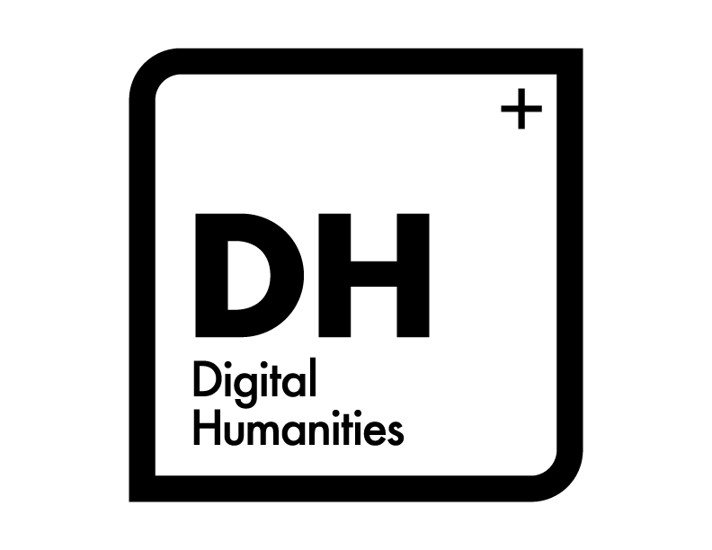
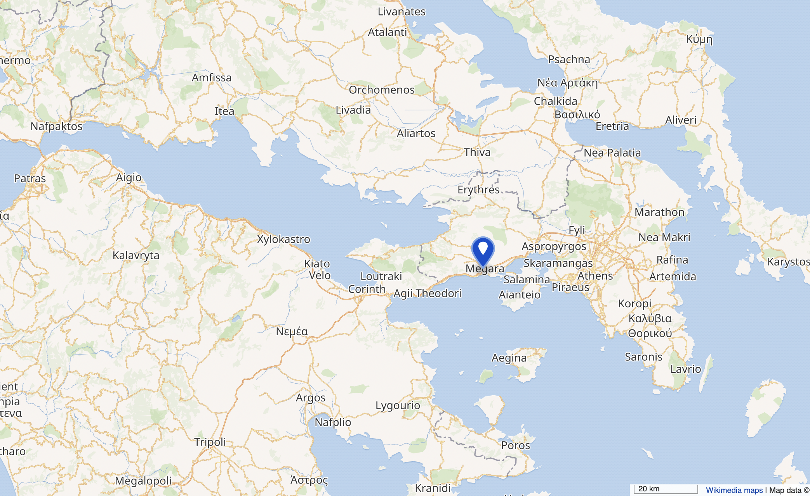
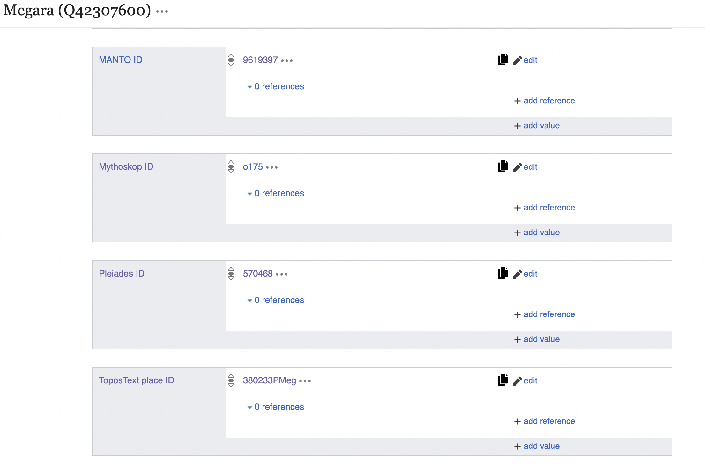
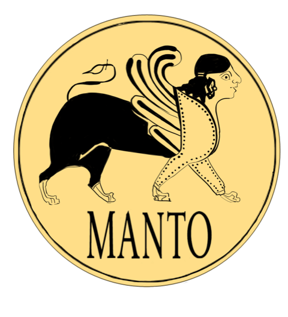
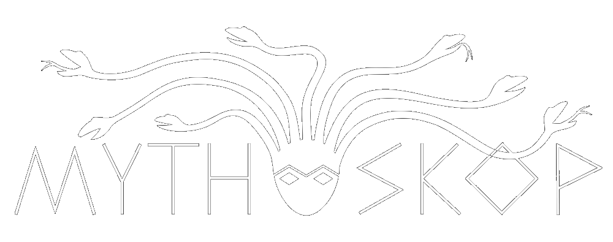
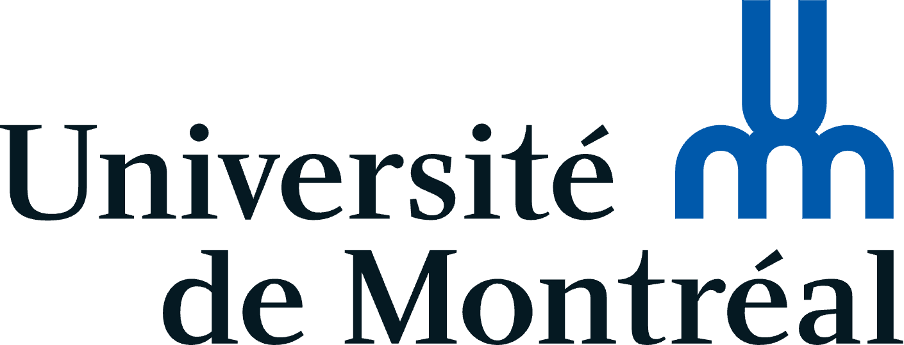

Authoritative Practices and Collective Validation: Wikidata within the Collaborative Digital Edition of the Greek Anthology
![]()
Université de Montréal
Université de Montréal
May 6, 2025
Introduction @àdécider
- Hello, we are happy to be here
- Not a surprise, Wikidata is now a commonly used tool in the DH community
- (Parallèles) As DH, Wikidata functions as a knowledge base, enabling a sort of collective verification and semantic linking of information.
But somehow, that creates a conflict: Unlike traditional academic publishing, where authority is centralised and often restricted to established institutions or recognised experts, Wikidata operates through a model of continuous, multilingual, and community-based editing that promotes the dissemination of free and accessible knowledge globally. This paradigmatic shift invites a fundamental rethinking of authority, editorial responsibility, and the epistemological foundations of data.
- That brings us to the question with which we will work with today:
How, then, can expert-led projects — whether developed by academics, government agencies or GLAM institutions — work with a generalist platform such as Wikidata to generate new forms of knowledge? How do these hybrid models, which combine scholarly expertise with public participation, challenge traditional boundaries between academic and amateur contributors, and between knowledge production and validation?
- In the next 20 minutes, we will :
- start by exploring how the infrastructure and logic of Wikidata can be integrated into DH projects
- talk a bit about the Anthologia Graeca project, a collaborative digital edition of the Greek Anthology
- We will analyse how Wikidata is embedded in the project’s data model — particularly through our treatment of the keyword “authors” — and how this integration opens new spaces for knowledge production.
- Finally, drawing on those concrete examples, we will reflect on the tensions between authority and collective intelligence that shape such initiatives, and the ways in which digital infrastructures can both challenge and extend traditional scholarly practices.
Wikidata and Digital Humanities @maxime
Wikidata is a major knowledge graph for structuring and sharing data
DH projects use it to publish Linked Open Data without technical barriers
GLAM institutions rely on it for metadata curation and interoperability
 
Wikidata as A Linking Hub @maxime




Authority on Digital Platforms @maxime
A collaborative and digital edition of the Greek Anthology @mathilde
- Canada Research Chair on Digital Textualities
- Fundings (SSHRC) ;
- Insight Development (2017-2019)
- Insight (2019-2025)
- 2 Connections (2022, 2024)
- Large team :
- Main researchers : M. Vitali-Rosati, E. Bouchard, C. Raschle
- Coordinator : M. Verstraete, W. Bouchard
- Technical development : D. Larlet, S. Rubio, É. Guicherd
- Editors : L. Capelo, M. Guénette, É. Bernaer, …
- Partners : CRIHN, GREN, Perseus, Perseids, Heidelberg’s Library, Liceo classico S. di Cagnazzi (Bari), University of Naples, …
- Many collaborators …
Project’s corpus
- Collection of ancient Greek epigrammatic poetry
- Classical to Byzantine periods (= 15 centuries of epigrammatics)
- < successive compilations
- Open corpus:
- AG = Palatine Anthology1 + Appendix Planudea2
- According to our API, 4,134 epigrams, by 311 authors
Project’s goals
- A hub for the Greek Anthology : Manuscript, Texts (in many languages), Keywords, Comments,…
- La plateforme : https://anthologiagraeca.org/
A few words on the previous platforms
- experimentation is part of the project
- corpus : fragmentary and complex transmission
- Different platforms:
- SPIP
designing a digital edition involves more than providing access to texts (Sahle 2016)
- Anthologia Palatina (allowed collaboration)
- Anthologia graeca (collaboration, API, multilingual support)
The platform’s keywords
- Présenter le projet
- Présenter l’historique des plateformes
- Parler rapidement des partenaires éventuellement (ou pas)
- Keyworkds dans l’AG
Some comments on the outcome and future work @mathilde
- Faire la même chose pour les autres types de mots-clés (villes – presque fini) et les personnages, les thèmes, etc. ce qui fait émerger de nouvelles questions méthodologique etc (donner les exemples)
- travail en cours, on est heureux d’avoir vos retours dessus et on veillera à les intégrer à notre pratique
Conclusion @maxime

Wikidata and Research, University of Florence, June 5-6 2025